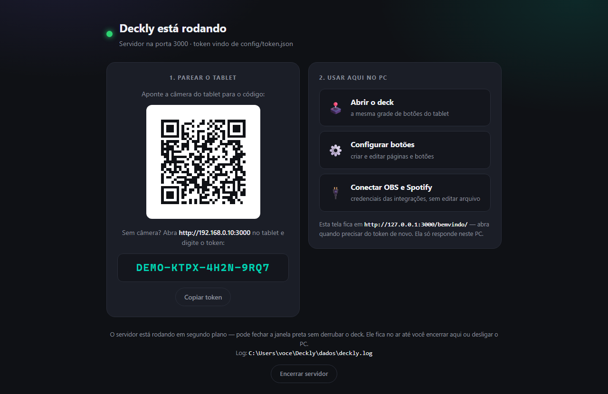
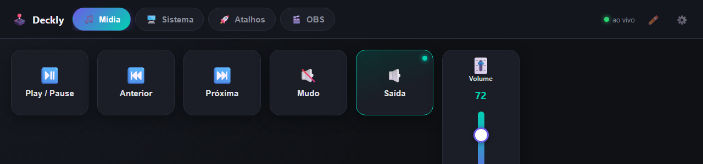
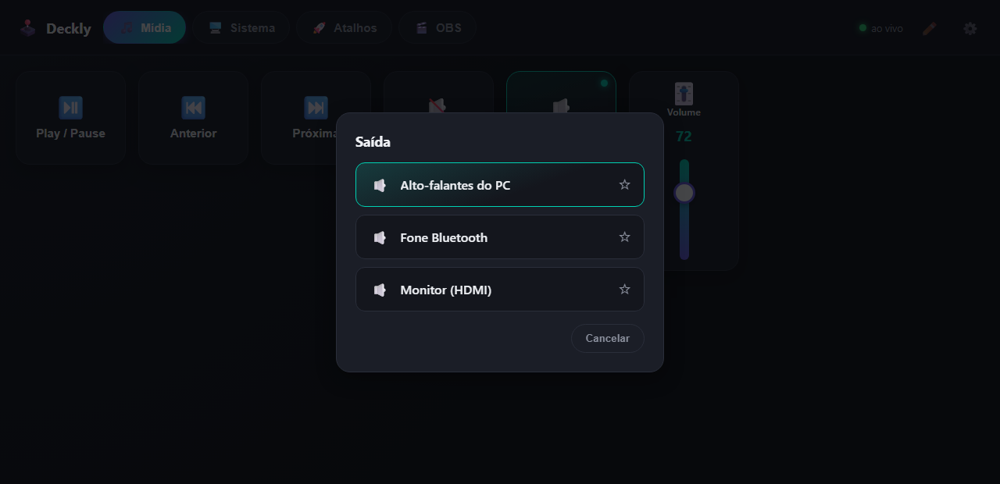
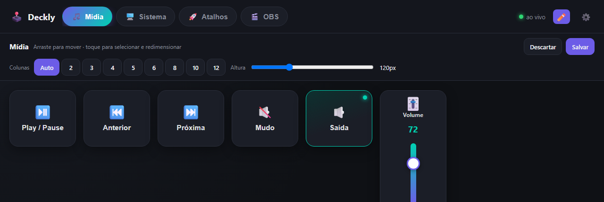
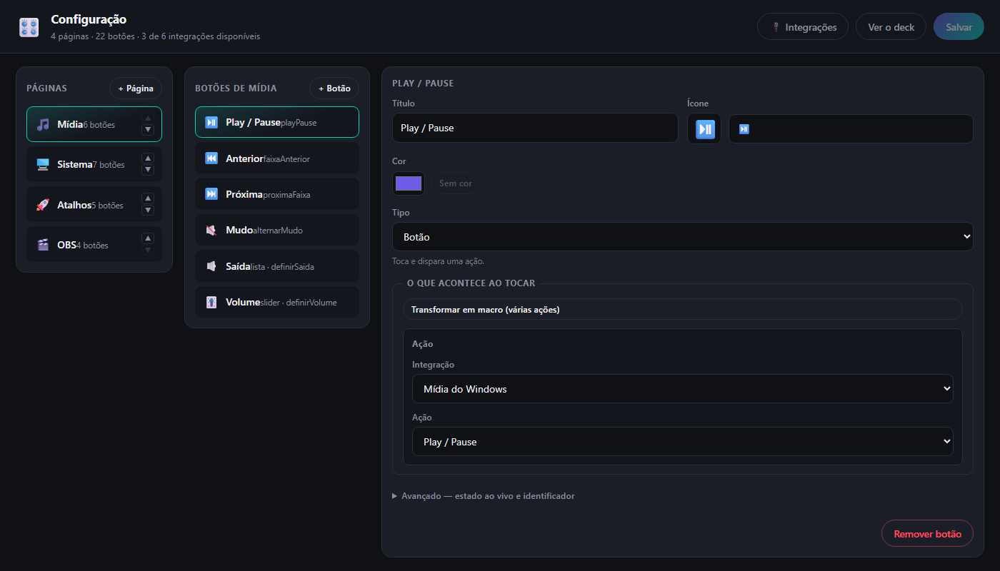
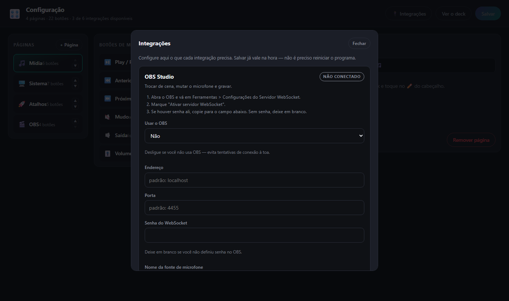

Guia de primeiro acesso. Do arquivo baixado até o deck funcionando no tablet, sem precisar saber programar.
Transforme qualquer tablet ou celular numa mesa de botões para o seu PC: volume, mídia, atalhos do Windows, programas, jogos, OBS, Discord e até as luzes da casa — tudo por toque, pela rede da sua casa.
O programa que roda no seu PC é um pequeno servidor. O tablet abre uma página no navegador, pela rede Wi-Fi da sua casa, e cada botão que você toca ali manda um comando para o PC. Nada passa pela internet e nada é instalado no tablet.
| O que | Detalhe |
|---|---|
| Um PC com Windows | Windows 10 ou 11. É nele que o programa roda e é ele que os botões controlam. |
| Um tablet ou celular | Android ou iPad, com um navegador. É a sua mesa de botões. |
| A mesma rede Wi-Fi | O ponto mais importante. PC e tablet precisam estar na mesma rede da casa. Se o tablet estiver em outra rede (ou usando dados móveis), nada vai carregar. |
| O arquivo do programa | deckly.exe — um arquivo só, sem instalador. |
Alguns roteadores têm uma rede "Visitantes" separada, que impede os aparelhos de conversarem entre si. Se o seu tablet estiver nela, mude para a rede principal.
Nada. Vale a pena dizer isso explicitamente, porque programas assim normalmente pedem meio mundo de coisa antes de funcionar:
| O que | Por que não precisa |
|---|---|
| Node.js | Vai embutido no deckly.exe. É a maior
parte dos ~90 MB do arquivo. |
| WSL, Docker, Python | Não são usados em nada. Aparecem no repositório porque é o ambiente de quem desenvolve, não de quem usa. |
| Instalador, permissão de administrador | Não há instalador. O programa roda com o seu usuário comum e grava só na pasta onde você o colocou. |
| Aplicativo no tablet | É uma página no navegador. O "instalar na tela inicial" do passo 4 é só um atalho, não um app baixado de loja. |
| Conta, cadastro, internet | O deck funciona na sua rede, sem conta e sem nuvem. Só o Spotify exige conta — e só se você quiser usá-lo. |
| Integração | Precisa de |
|---|---|
| Mídia e Atalhos | Nada. Funcionam assim que o programa abre. |
| OBS | OBS Studio aberto, com o servidor WebSocket ligado. |
| Spotify | Conta Premium e um app criado no site de desenvolvedores deles (é gratuito e leva uns minutos). |
| Discord | Discord aberto. Nada a configurar no modo padrão — ele usa os atalhos de teclado do próprio Discord. |
| Casa inteligente | Um Home Assistant rodando na sua rede (num Raspberry Pi, num PC que fica ligado ou num mini-servidor). Ele cobre Tuya, Positivo, Intelbras, Philips Hue, Sonoff, Shelly, Zigbee e o que mais você tiver. |
Crie uma pasta em algum lugar de que você goste — por exemplo
Documentos\StreamDeck — e mova o deckly.exe
para lá.
Isso importa: na primeira vez que roda, o programa cria uma pasta
dados ao lado dele, com a sua configuração e o seu token. Se
o arquivo ficar na pasta Downloads, sua configuração vai morar na pasta
Downloads também.
Uma janela preta abre por alguns segundos, mostrando um QR code, e o seu navegador abre sozinho numa tela de boas-vindas.
A tela diz "O Windows protegeu o computador". Isso acontece com qualquer programa novo que não tenha uma assinatura digital paga — não é um alerta de vírus. Clique em Mais informações e depois em Executar assim mesmo.
O Windows vai perguntar se o programa pode se comunicar na rede. Marque Redes particulares e clique em Permitir acesso. Sem isso o tablet não consegue enxergar o PC.
O programa se solta dela e continua rodando em segundo plano. O deck segue funcionando no tablet mesmo com a janela fechada.
Para desligar, volte na tela de boas-vindas
(http://127.0.0.1:3000/bemvindo/) e clique em
Encerrar servidor.

É ela que mostra o QR code, o token e os atalhos para abrir o deck e a
tela de configuração. Ela só abre no PC onde o programa roda — de
propósito, já que é onde o token aparece. Guarde o endereço
http://127.0.0.1:3000/bemvindo/ nos favoritos.
O deck é protegido por um token — uma senha curta, no
formato ABCD-1234-EFGH-5678. Sem ela, nenhum outro aparelho da
rede consegue mandar comandos para o seu PC. Você só precisa informá-la uma
vez por aparelho.
Pronto: o navegador abre já com o token preenchido, e o deck aparece. O token fica guardado no aparelho — nas próximas vezes é só abrir.
http://192.168.0.15:3000.O Opera Mini é uma boa escolha: é leve e rápido, o que ajuda em tablets antigos, que é justamente o tipo de aparelho que costuma virar deck.
Um cuidado: ele tem um modo de economia de dados que passa as páginas por servidores da Opera antes de exibir. Como o seu deck está na rede da sua casa, e não na internet, esse modo pode impedir a página de carregar. Se a tela ficar em branco ou der erro, abra as configurações do Opera Mini e desligue a economia de dados (ou o "modo Extreme").
Se ainda assim não abrir, use o Chrome — ele também tem o melhor suporte ao passo 4 (instalar na tela inicial).
O token impede que outros aparelhos da rede usem o seu deck, e a tela de configuração só responde no próprio PC. Mas isto foi feito para a rede de casa: não exponha o programa à internet (nada de abrir portas no roteador).
Dá para usar pelo navegador mesmo, mas instalando na tela inicial o deck abre em tela cheia, sem barra de endereço, e ganha um ícone próprio — parecendo um app de verdade.
Toque no menu e procure Adicionar à tela inicial. Ele cria um atalho — que já resolve, ainda que sem a tela cheia completa do Chrome.
Nas configurações do tablet, aumente o tempo até a tela apagar (ou desative o bloqueio automático) enquanto ele estiver na base servindo de deck. E deixe-o carregando: a tela ligada consome bateria.
O deck já vem com quatro páginas prontas. As três primeiras funcionam sem você configurar nada:
| Página | O que faz |
|---|---|
| 🎵 Mídia | Play/pause, faixa anterior e próxima, mudo, troca da saída de áudio e uma barra de volume do Windows. Funciona com o que estiver tocando — YouTube, Spotify, jogo. |
| 🖥️ Sistema | Lista das janelas abertas (toque para ir direto a uma), print, bloquear o PC, mostrar a área de trabalho, encaixar janelas nos lados. |
| 🚀 Atalhos | Exemplos de abrir programas e sites, além de um seletor com os jogos instalados da Steam. |
| 🎬 OBS | Trocar de cena, mutar o microfone e gravar. Só funciona com o OBS aberto — veja a seção 8. |

| Tipo | Como se comporta |
|---|---|
| Botão | Toca e dispara. É o tipo mais comum. |
| Barra deslizante | Arrasta para escolher um valor — volume, brilho de uma luz. Ela acompanha sozinha se o valor mudar no PC. |
| Seletor | Abre uma lista para você escolher: as janelas abertas, os jogos instalados, os aparelhos de áudio. |
| Mostrador | Não dispara nada; só exibe informação, como a música que está tocando. |

Alguns botões mudam de cor conforme o estado real do PC: o de mudo fica vermelho quando o som está mudo, o de gravar fica aceso enquanto o OBS grava, o de uma luz acende quando a luz está acesa — inclusive se você usar o interruptor da parede. Isso não é enfeite: é o que evita apertar duas vezes por não saber se funcionou.
Toque no ✏️ no canto do deck. Os botões passam a poder ser arrastados — no próprio tablet, vendo como fica de verdade.

− col + / − lin + na barra de cima, que são mais
fáceis de acertar com o dedo.Enquanto o ✏️ está ligado, tocar num botão não faz ele funcionar — dá para arrastar o botão de desligar o PC sem medo.
No PC, abra http://127.0.0.1:3000/config/ (ou clique no ⚙️ no
canto do deck). Dali você cria páginas, adiciona botões, escolhe emoji e o
que cada um faz, e clica em Salvar.
Não precisa reiniciar nada: ao salvar, o tablet se atualiza sozinho, na hora.

Em Transformar em macro, o botão passa a aceitar vários passos, executados em sequência num toque só: abrir o jogo e o Discord, ou trocar a cena do OBS e começar a gravar.
Arrumar os botões na tela é inofensivo: mudar de lugar não muda o que eles fazem. Já escolher o que um botão faz é outra história — um botão pode mandar abrir qualquer programa, e deixar isso editável pela rede seria o mesmo que deixar qualquer aparelho da casa executar coisas no seu PC. Por isso o ✏️ funciona em qualquer lugar, e a tela de configuração, por padrão, só responde na própria máquina.
O botão 🔌 Integrações, no topo, abre a tela onde cada integração diz o que precisa e onde conseguir. Nada de editar arquivo: ao salvar, vale na hora.

Esta é a lista completa do que existe hoje, integração por integração, com o que cada ação pede que você informe. Você monta tudo pela tela de configuração da seção anterior — a lista aqui é para consulta, para saber o que é possível antes de procurar.
Integração é a família (mídia do Windows, OBS, Spotify…). Ação é o que o botão faz. O que você informa são os campos que aparecem na tela de configuração ao escolher aquela ação — quando está vazio, é porque a ação não precisa de nada.
Precisa de: Nada. Funciona assim que o programa abre, no Windows.
| Ação | O que você informa |
|---|---|
| Play / Pause | — |
| Faixa anterior | — |
| Próxima faixa | — |
| Alternar mudo | — |
| Aumentar volume | — |
| Diminuir volume | — |
| Definir volume | Volume (0–100) |
| Trocar a saída de áudio | Dispositivo Em branco num botão do tipo Seletor: a saída é escolhida na hora, na lista. |
Precisa de: OBS Studio aberto, com Ferramentas > WebSocket Server Settings > Enable WebSocket server ligado.
| Ação | O que você informa |
|---|---|
| Trocar de cena | Nome da cena (obrigatório) Precisa bater exatamente com o nome da cena no OBS. |
| Alternar mudo do microfone | Nome da fonte de áudio Em branco usa OBS_MIC_INPUT_NAME do .env (padrão: Mic/Aux). |
| Iniciar / parar gravação | — |
Precisa de: Conta Spotify Premium e as chaves SPOTIFY_* no .env — veja "Habilitar o Spotify" no README.
| Ação | O que você informa |
|---|---|
| Play / Pause | — |
| Próxima faixa | — |
| Faixa anterior | — |
| Definir volume do Spotify | Volume (0–100) |
| Tocar em outro dispositivo | ID do dispositivo |
Precisa de: Nada. Funciona assim que o programa abre, no Windows.
| Ação | O que você informa |
|---|---|
| Captura de tela (Win+Shift+S) | — |
| Bloquear o PC | — |
| Mostrar área de trabalho | — |
| Encaixar janela à esquerda | — |
| Encaixar janela à direita | — |
| Área de transferência (Win+V) | — |
| Mover janela para o monitor da esquerda | — |
| Mover janela para o monitor da direita | — |
| Enviar atalho de teclado | Combinação de teclas (obrigatório) Ex.: CTRL+SHIFT+M. Vale CTRL, SHIFT, ALT, WIN, letras, números, F1–F24 e teclas como ENTER, ESC, TAB, setas. |
| Trazer um programa para frente | Nome do processo (obrigatório) Sem o .exe (ex.: Discord, vivaldi, Code). Falha se o programa não estiver aberto. |
| Digitar um texto | Texto (obrigatório) Digitado na janela que estiver em foco. Combine com "Trazer um programa para frente" numa macro. |
| Abrir programa | Caminho, comando ou atalho .lnk (obrigatório) Prefira o .lnk do Menu Iniciar para apps que se auto-atualizam. Comandos no PATH também valem (ex.: code, wt). Argumentos (opcional) Passados na linha de comando, para programas que precisam deles. |
| Abrir app da Store (MSIX) | AppUserModelID (obrigatório) Descubra com: Get-StartApps | Where-Object { $_.Name -like '*Nome*' } |
| Abrir site | Endereço (obrigatório) Navegador específico (opcional) Caminho do .exe. Em branco, abre no navegador padrão do Windows — prefira assim se for compartilhar seu deck com alguém, senão o botão quebra em quem não tiver esse navegador instalado. |
| Abrir jogo da Steam | AppID na Steam |
| Ir para uma janela | Identificador da janela |
Precisa de: Discord aberto, com os atalhos globais cadastrados em Configurações do Usuário > Teclas de Atalho e as mesmas teclas informadas na aba Integrações. Os botões não acendem: o Discord não informa se você está mudo.
| Ação | O que você informa |
|---|---|
| Ativar/desativar microfone | — |
| Ativar/desativar áudio (surdo) | — |
| Abrir o Discord | — |
| Canal anterior (na lista) | — |
| Próximo canal (na lista) | — |
| Atender chamada | — |
| Recusar chamada | — |
| Alternar painel de som | — |
| Servidor anterior | — |
| Próximo servidor | — |
| Ir para a ligação atual | — |
| Abrir a busca do Discord | — |
| Ir para um canal ou servidor | Nome do canal ou servidor |
Precisa de: Um Home Assistant rodando na sua rede e um token de acesso de longa duração. Cobre qualquer marca que o Home Assistant suporte — veja docs/casa-inteligente.md.
| Ação | O que você informa |
|---|---|
| Ligar / desligar (alternar) | Entidade (obrigatório) Ex.: light.sala. Use o seletor de entidades para descobrir os nomes. |
| Ligar | Entidade (obrigatório) Ex.: light.sala. Use o seletor de entidades para descobrir os nomes. |
| Desligar | Entidade (obrigatório) Ex.: light.sala. Use o seletor de entidades para descobrir os nomes. |
| Definir brilho da luz | Entidade (obrigatório) Ex.: light.sala. Use o seletor de entidades para descobrir os nomes. Brilho (0–100) |
| Definir cor da luz | Entidade (obrigatório) Ex.: light.sala. Use o seletor de entidades para descobrir os nomes. Cor Hex (#a64dff) ou k<kelvin> para branco (k2700 = quente, k6500 = frio). Num botão do tipo lista, a cor vem da opção escolhida. |
| Enviar comando de controle remoto (IR) | Controle remoto (obrigatório) A entidade do tipo remote, ex.: remote.controle_universal. Aparelho Como o aparelho foi nomeado ao aprender os códigos. Em branco, vale "ar". Comando aprendido (obrigatório) O nome dado ao código, ex.: ligar, temp_mais, turbo. |
| Ativar cena | Cena (obrigatório) Ex.: scene.noite |
Nada aqui é necessário para o deck funcionar. Tudo se configura pela
tela de Integrações — no PC, abra a tela de configuração e
clique em 🔌 Integrações (ou vá direto em
http://127.0.0.1:3000/config/#integracoes).
Cada integração mostra ali o que precisa e onde conseguir. Ao salvar, vale na hora — sem reiniciar o programa. Suas senhas ficam guardadas no PC e nunca são exibidas de volta na tela.
O programa reconecta sozinho: pode deixar os botões prontos e abrir o OBS depois. Se você não usa OBS, mude Usar o OBS para "Não" e apague a página do deck.
Exige Spotify Premium — é uma limitação do próprio Spotify. Em troca você ganha um mostrador com a música tocando, um volume só do Spotify e a troca de aparelho onde a música toca.
developer.spotify.com/dashboard com a sua conta
do Spotify e clique em Create app. Nome e descrição podem
ser qualquer coisa.O passo 5 precisa ser feito no navegador do PC, não do tablet.
Funciona sem configurar nada: no modo padrão, o Deckly simula os atalhos de teclado do próprio Discord para mutar o microfone, ficar surdo, atender e recusar chamada. Basta o Discord estar aberto.
Esse modo é cego, porém: como o Discord não conta o seu estado, os botões não acendem e o de mudo não sabe se você já está mudo. Se isso incomodar, existe o modo RPC, que conversa com o Discord de verdade — aí os botões acendem, e um seletor mostra os canais de voz reais para entrar com um toque. O preço é criar um aplicativo gratuito no portal de desenvolvedores do Discord, coisa de dez minutos.
No repositório, em docs/passo-a-passo.md — ele cobre a
criação do app, o que colar em cada campo e o que fazer quando dá errado.
O Deckly não fala com cada marca de lâmpada; ele fala com o Home Assistant, um programa gratuito que você deixa rodando na sua rede (um Raspberry Pi dá conta). A vantagem é que uma configuração só cobre tudo que ele suporta: Tuya, Positivo, Intelbras, Multilaser, Philips Hue, Sonoff, Shelly, Zigbee.
Com ele ligado, o deck ganha botões que acendem conforme a luz real — inclusive quando alguém usa o interruptor da parede —, barra de brilho e um seletor de cores.
A integração Tuya que o Home Assistant instala por padrão passa pela
nuvem: o comando sai da sua casa, vai até o servidor do
fabricante e volta. Quando essa conexão esfria, apertar o botão pode demorar
minutos. A solução é o controle local (LocalTuya), que responde em
cerca de um décimo de segundo e funciona até com a internet caída. O passo a
passo completo está em docs/passo-a-passo.md.
deckly.exe e escolha
Criar atalho.shell:startup e
dê Enter.A partir daí o deck fica pronto assim que o PC liga, sem nenhuma janela aparecendo.
| Sintoma | O que costuma ser |
|---|---|
| A página não abre no tablet | Quase sempre é a rede. Confirme que o tablet está no mesmo Wi-Fi (não em dados móveis, nem na rede de visitantes). Se estiver usando Opera Mini, desligue a economia de dados. Depois, confira se o Firewall do Windows foi liberado para redes particulares. |
| Abre, mas pede o token toda hora | O navegador está apagando os dados do site ao fechar (modo anônimo ou limpeza automática). Use uma aba normal, ou instale na tela inicial. |
| O deck abre mas os botões não fazem nada | O indicador de conexão no canto mostra o estado. Se estiver
desconectado, o programa provavelmente foi encerrado no PC — rode o
.exe de novo. |
| Os botões do OBS estão apagados | O OBS está fechado ou o servidor WebSocket dele não está ligado. Veja a seção 8. |
| Os botões do Discord não acendem | É o esperado no modo padrão: ele age por atalho de teclado e o Discord não informa o seu estado. Para os botões acenderem, é preciso o modo RPC — veja a seção 8. |
| A luz demora minutos para responder | O comando está indo pela nuvem do fabricante em vez da sua rede. Veja o aviso sobre controle local na seção 8. |
| Um ícone aparece como quadradinho | O emoji escolhido não existe na fonte do tablet. Troque por outro na tela de configuração. |
| Nada acontece ao dar dois cliques | Pode já estar rodando em segundo plano: abra
http://127.0.0.1:3000/bemvindo/. Se não abrir, rode pelo
Prompt de Comando com deckly.exe --console para ver
a mensagem de erro na tela. |
| Quero ver o que deu errado | Há um arquivo deckly.log dentro da pasta
dados, com tudo que o programa registrou. |
Não há instalação, então não há desinstalação: encerre o servidor e apague
a pasta. Se tiver criado o atalho de inicialização, apague-o de
shell:startup também.
README.md, em docs/acoes.md e em
docs/passo-a-passo.md (as configurações que exigem trabalho
manual: Home Assistant, Discord no modo RPC e iniciar com o Windows).